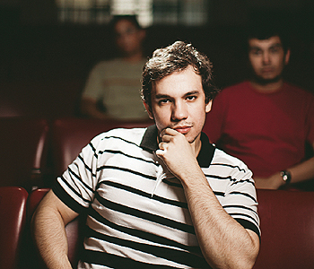

|
|
Quem são e o que pensam os jovens militantes de direita que fazem USP Época São Paulo, 7 de novembro de 2011
Eles são monarquistas, anticomunistas, contrários ao aborto e à homossexualidade, defensores do porte de arma - e alunos de mesma universidade famosa pela sua militância de esquerda. Conheça a União Conservadora Cristã (UCC), o lado direitista da USP Vida Urbana - Por IGOR RIBEIRO. - 07/11/2011  OS ANTI-MARX Saulo Mega Soares, entre dois jovens conservadores. Eles provocam um novo embate ideológico no meio universitário Alto, magro, de olhos claros e cabelos cacheados, Arthur Pittarello poderia se orgulhar de sua juventude. Mas o estudante de ciências sociais da USP parece não ligar para a própria idade. “Aí você me pegou. Tenho 22 ou 23…”, diz. Sua hesitação é reveladora: Pittarello é um cara tradicional. Monarquista e religioso, é presidente da União Conservadora Cristã (UCC). A entidade nasceu num ambiente naturalmente hostil: entre os estudantes da USP, famosos por sua histórica militância de esquerda. Mais curioso é que ele sobreviva sem o apadrinhamento de nenhum partido político de centro ou de direita. Mesmo assim, cerca de 20 jovens como Pittarello (23 anos confirmados) integram o UCC. A entidade surgiu há dois anos para disputar o Diretório Central dos Estudantes da USP. Conseguiu o apoio de 217 pessoas e ficou em sexto lugar. Sem chance de vencer, a chapa chamou a atenção. Em maio, voltou a ser notícia ao participar da Contra-Marcha da Maconha, questionando os argumentos pró-legalização da droga. O episódio rendeu à UCC a pecha de extremadireita, prontamente recusada. Por saber que defendem ideias controvertidas no âmbito acadêmico, seus integrantes costumam ser avessos à exposição. Relutaram em falar com a reportagem de Época SÃO PAULO. Alguns não quiseram fornecer seus nomes reais e apenas um quis mostrar o rosto: o rapaz em primeiro plano na foto à direita, Saulo Mega Soares, de 21 anos. “Eu era trotskista quando cheguei à faculdade”, diz ele, hoje no quarto ano de Direito. “Estudei e debati muito até perceber que a filosofia marxista é equivocada. O século XX foi a completa negação de tudo o que Marx previu.” Além de ser articulado e denotar erudição, Soares joga futebol e vai à academia. “Além da leitura, gosto muito da atividade física.” Cada um tem suas razões para estar na entidade. Catarina (nome fictício), de 20 anos, cresceu numa família católica do interior paulista. Tímida, retraída e claudicante nas palavras, ela diz que sempre cultivou um sentimento anticomunista. “A busca pela verdade é o que me move”, afirma ela, que também estuda na faculdade do Largo São Francisco. Seu colega, Pedro Henrique Barreto, de 21 anos, entrou em depressão ao procurar respostas sobre a questão do aborto – diz que a reflexão político-religiosa o salvou. “Somos movidos pela castidade. Deus nos mandou ser assim”, diz o estudante, que namora uma conservadora como ele. Sexo, só depois do casamento. Barreto gosta de jazz, música clássica e do filme Cidadão Kane, o clássico de Orson Welles. Catarina prefere rock, como AC/DC e Titãs. Um de seus filmes preferidos é Tropa de elite, o mesmo de Soares, que ouve Skank e Jota Quest. De gostos diferentes, se irmanam na ideologia. São todos monarquistas, reprovam o aborto e a homossexualidade – e defendem o porte de arma. Para o filósofo Renato Janine Ribeiro, eles preenchem uma lacuna real na militância universitária. “Os grupos de esquerda atuais não defendem mais objetivos ideológicos, como justiça social”, diz o professor de ética e filosofia política da USP. Isso favoreceria a defesa de causas opostas. “Acho saudável que exista alguma reação como a UCC”, diz o filósofo Olavo de Carvalho. Espécie de guru do conservadorismo brasileiro, ele lamenta a ausência de oposição ao que chama de “hegemonia da esquerda”. Mas acha que a militância jovem não terá força fora das universidades. “Politicamente, não vai dar em nada”, diz. Segundo Carvalho, figuras como o falecido doutor Enéas Carneiro e o deputado Jair Bolsonaro são expoentes “patológicos e excêntricos”. Para ele, não existe uma direita intelectualmente respeitável no Brasil. Pittarello concorda: “A situação política de hoje não dá espaço a um conservador. Não temos um projeto de poder”. É nesse vazio que a UCC se mobiliza para estudar, discutir e promover eventos sobre os temas que defende, seja na USP, seja na Unicamp, onde também conta com adeptos. “Não vamos nos reduzir à mera divulgação política”, diz Barreto. “A gente também quer estudar, quer saber, quer aprender.” AS BASES DE UM CONSERVADOR TRADIÇÃO PROVIDÊNCIA REFORMA DEMOCRACIA EQUILÍBRIO
|

|

Home
- Informações - Textos
- Links
- E-mail